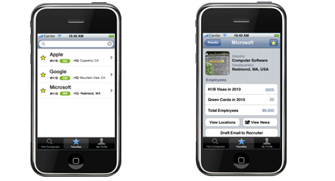
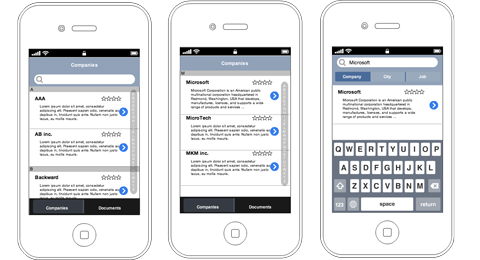
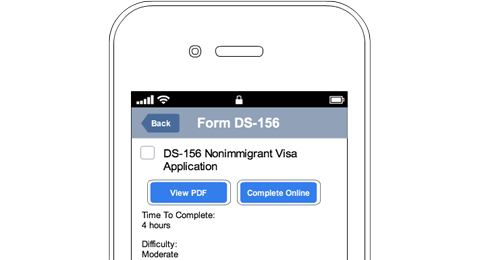

Our app would help foreigners find internationally friendly companies.

We were able to generate mid-fidelity mock-ups quickly in 2 days.

For a project in Interaction Design, a group of us set out to solve problems for foreigners residing in the U.S. Our assignment involved problems in the domain of employment. We went through several iterations for the scenarios we created in response to interviews, market research, critique feedback. Eventually, we settled our focus on the sort of reconnaissance most relevant during a job fair, helping our target user group quickly identify companies of interest as friendly to internationals.
Incomer Careers is an iPhone app created to help internationals find companies in the U.S. that hire people from outside the countries. Our focus is on helping internationals to navigate career fairs and to do on-the-go company investigation, so they can focus their attention on companies that they know have the ability to hire them. We started by zeroing in on our target user group via a persona. Next we created some looked at some of the competition and created initial designs to get at what we felt that persona represented. Finally, we revisited our design with background research with current and former visa employees as well as career center employees and companies.